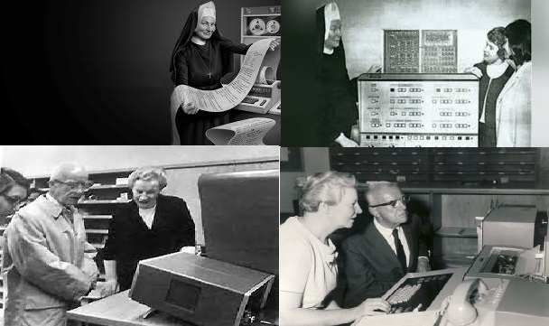

Mary Kenneth, primeira mulher PhD em ciência da computação

Informações Biograficas:
Mary Kenneth Keller, mais conhecida como Irmã Mary Kenneth Keller nasceu em 17 de dezembro de 1913, Cleveland, Ohio, EUA.E faleceu em 10 de janeiro de 1985, Dubuque, Iowa, EUA.
Tornou-se a primeira mulher dos Estados Unidos a ter um PhD em Ciência da Computação em 1965.
Ela estudou, anteriormente, Matemática e Física, de acordo com o Centre for Computing History, museu localizado em Cambridge, Reino Unido.
Em 1958, começou a trabalhar no Dartmouth College – em um centro de informática apenas para homens (na época).
Em 1932, antes de seu histórico diploma, Mary entrou para a ordem das Irmãs de Caridade da Abençoada Virgem Maria.
E proferiu seus votos em 1940, tornando-se oficialmente freira.
Trabalhou ainda no desenvolvimento da linguagem de programação BASIC, uma forma de traduzir os zeros e uns do código de computador em algo mais intuitivo e direto.
A importancia de Mary Keller para tecnologia:
A irmã Mary Keller defendeu a inclusão e o envolvimento de mulheres na ciência da computação, e contribuiu para a fundação da Association of Small Computer Users in Education (ASCUE).
Seus quatro livros sobre computação e programação são referência na área.
Pois para ela, a computação trouxe uma explosão de informação e essa informação era inútil a menos que estivesse disponível.
Com o auxilio de Mary Keller, entre outros (Bill Gates, fundador da Microsoft aos 20 anos, Ada Lovelace, primeira programadora da história, Steve Wozniak, o verdadeiro designer do Apple I, Grace Hopper: a divulgação de linguagens de computador, Mark Zuckerberg, fundador do Facebook, entre outros.) é possivel afirmar que hoje a informática em nossa sociedade é o de manter as pessoas devidamente informadas, através de uma melhor comunicação, possibilitando assim, que elas decidam pelos seus rumos e os de nossa civilização.
Para o seu doutoramento, realizou a tese "Inferência indutiva sobre padrões gerados por computador", que se baseou na conceção de algoritmos para realizar uma diferensciação analítica na expressão algébrica.